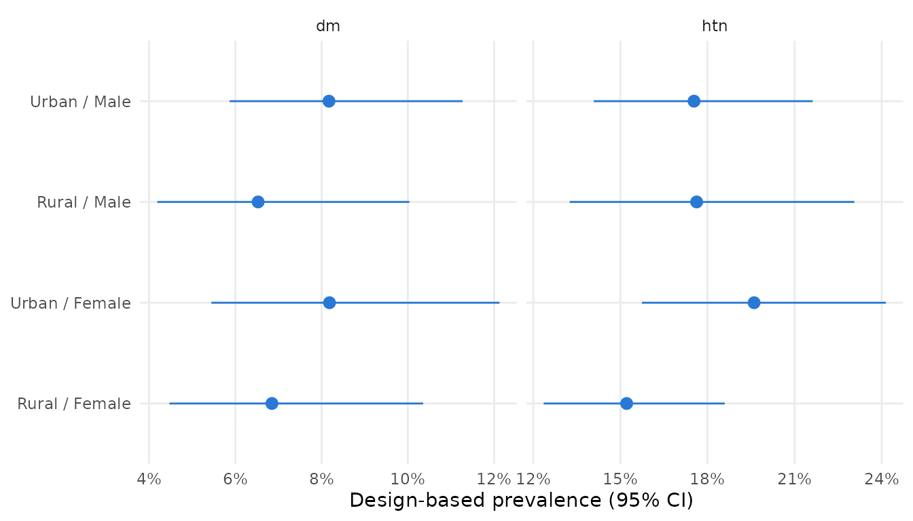
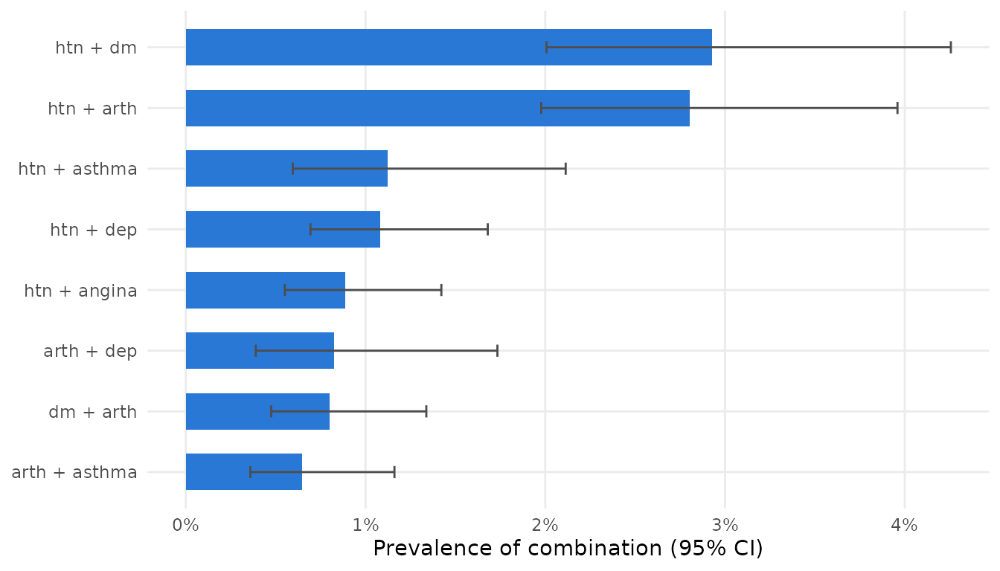
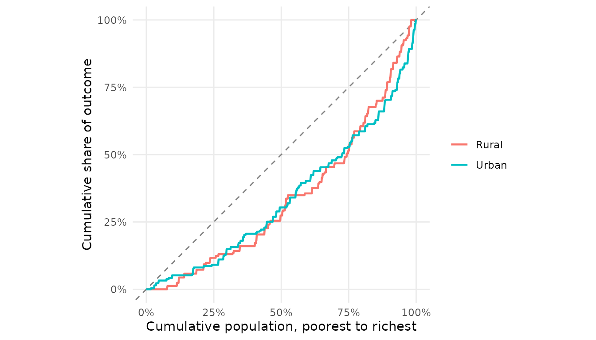
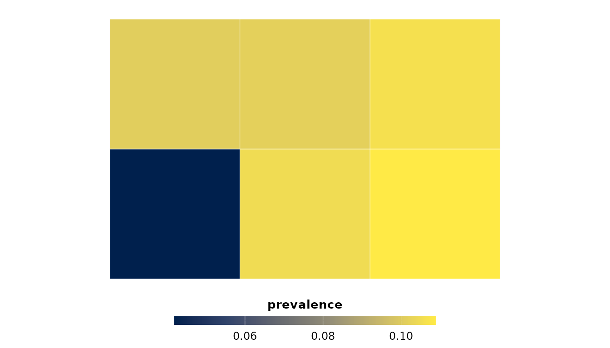
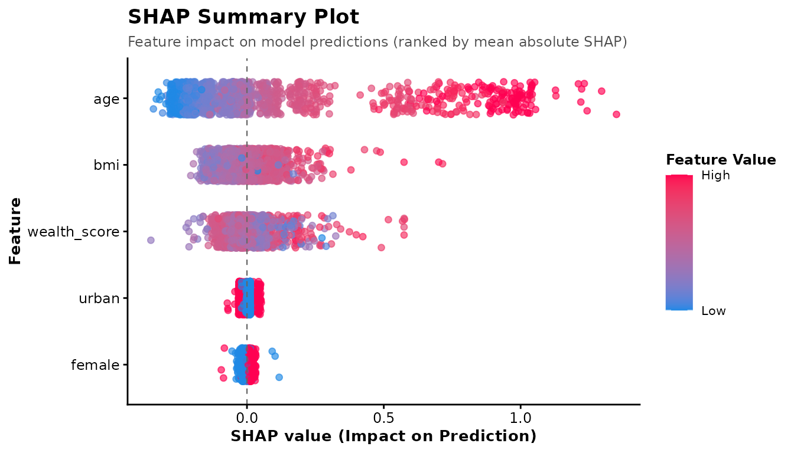

A complete analysis with SurveyNCD
Sujon Mia - StatAid Research Lab
Source:vignettes/full-workflow.Rmd
full-workflow.RmdThis vignette walks through a full analysis with SurveyNCD using the two simulated datasets shipped with the package:
-
ncd_surveyholds 2,400 adults from a stratified two-stage cluster sample (12 strata, 120 primary sampling units, unequal weights). -
child_anthroholds 1,034 children under five from the same households.
All data are synthetic and the regions are
fictitious, so no result describes a real population. For a
real-data example, see vignette("real-data-nhanes").
The workflow has four steps: build the design once, clean and score respondents, then estimate and plot.
library(SurveyNCD)
library(survey)
#> Loading required package: grid
#> Loading required package: Matrix
#> Loading required package: survival
#>
#> Attaching package: 'survey'
#> The following object is masked from 'package:graphics':
#>
#> dotchart1. Clean raw answers and score respondents
STEPS-style questions are coded 1 = yes, 2 = no, 9 = don’t know; the
depression item is stored as text. recode_binary() maps
both to 0/1 and leaves anything it cannot place as NA.
d <- ncd_survey
for (v in c("htn", "dm", "arth", "asthma", "angina", "stroke")) {
d[[v]] <- suppressWarnings(recode_binary(d[[paste0(v, "_raw")]], yes = 1, no = 2))
}
d$dep <- suppressWarnings(recode_binary(d$dep_raw, yes = "Yes", no = "No"))
conds <- c("htn", "dm", "arth", "asthma", "angina", "stroke", "dep")
labels <- c(htn = "Hypertension", dm = "Diabetes", arth = "Arthritis",
asthma = "Asthma", angina = "Angina", stroke = "Stroke",
dep = "Depression")
scored <- multimorbidity_index(d, conditions = conds, na_action = "na")
scored$age_group <- cut(scored$age, c(18, 30, 45, 60, 70), right = FALSE,
labels = c("18-29", "30-44", "45-59", "60-69"))
table(scored$mm_category, useNA = "ifany")
#>
#> None Single condition Multimorbid <NA>
#> 1310 557 187 3462. Build the survey design once
steps_design(), dhs_design() and
mics_design() use each programme’s standard variable names.
Here the columns are already named psu and
stratum, so only the weight is needed. Every estimation
function below takes this design object.
des <- steps_design(scored, weight = "wt")3. Prevalence
ncd_table(des, conds, by = "sex", labels = labels)
#> Design-based % (95% CI)
#> Indicator Overall Female Male
#> Unweighted n 2,400 1,234 1,166
#> Hypertension 17.0 (14.8-19.5) 16.5 (14.1-19.1) 17.6 (14.3-21.4)
#> Diabetes 7.1 (5.6-9.1) 7.2 (5.3-9.8) 7.0 (5.2-9.5)
#> Arthritis 10.4 (9.0-12.0) 12.4 (10.1-15.1) 8.2 (6.5-10.4)
#> Asthma 3.9 (3.1-4.9) 3.6 (2.6-4.9) 4.2 (3.0-5.9)
#> Angina 3.1 (2.2-4.3) 2.7 (1.8-4.1) 3.5 (2.3-5.1)
#> Stroke 0.8 (0.5-1.3) 0.8 (0.4-1.7) 0.8 (0.5-1.4)
#> Depression 6.5 (5.2-8.1) 7.3 (5.5-9.8) 5.6 (4.2-7.3)survey_prevalence() returns the numbers behind the table
and accepts several grouping variables:
prev <- survey_prevalence(des, c("htn", "dm"), by = c("residence", "sex"))
prev
#> indicator residence sex n estimate se lower upper
#> 1 htn Rural Female 615 0.15215544 0.01552199 0.12357260 0.1859469
#> 2 htn Rural Male 542 0.17625922 0.02439366 0.13253373 0.2305762
#> 3 htn Urban Female 571 0.19605364 0.02095188 0.15740668 0.2414700
#> 4 htn Urban Male 580 0.17535910 0.01878007 0.14082158 0.2162354
#> 5 dm Rural Female 616 0.06847872 0.01437921 0.04469240 0.1035524
#> 6 dm Rural Male 549 0.06527557 0.01425549 0.04188441 0.1003616
#> 7 dm Urban Female 578 0.08183294 0.01638334 0.05443064 0.1212614
#> 8 dm Urban Male 589 0.08170581 0.01332170 0.05867016 0.1127031
#> deff
#> 1 1.146726
#> 2 2.217221
#> 3 1.587518
#> 4 1.412147
#> 5 1.993412
#> 6 1.825201
#> 7 2.061252
#> 8 1.390791
ggplot2::autoplot(prev)
Multimorbidity, overall and by two variables:
mm_prevalence(des)
#> 346 of 2400 rows have a missing multimorbidity score and are excluded from the survey-weighted estimate.
#> n prevalence prevalence_se prevalence_lower prevalence_upper
#> 1 2054 0.09533923 0.01175125 0.07445529 0.1213131
#> mean_conditions mean_conditions_se
#> 1 0.4850582 0.02954051
mm_prevalence(des, by = c("residence", "sex"))
#> 346 of 2400 rows have a missing multimorbidity score and are excluded from the survey-weighted estimate.
#> residence sex n prevalence prevalence_se prevalence_lower
#> 1 Rural Female 547 0.09397847 0.01827722 0.06318866
#> 2 Rural Male 491 0.09178940 0.01791648 0.06163755
#> 3 Urban Female 503 0.11153048 0.02256707 0.07365918
#> 4 Urban Male 513 0.09042279 0.01819417 0.05997418
#> prevalence_upper mean_conditions mean_conditions_se
#> 1 0.1375680 0.4938697 0.04533023
#> 2 0.1345756 0.4731381 0.04787520
#> 3 0.1653965 0.5154127 0.05939522
#> 4 0.1341244 0.4588677 0.04920903Age standardisation
Comparisons between groups or surveys with different age structures
need age-standardised estimates. who_standard_population()
re-aggregates the WHO World Standard Population to the STEPS age
groups.
std <- who_standard_population(breaks = c(18, 30, 45, 60, 70))
std
#> age_group lower upper weight
#> 1 18-29 18 30 0.3075494
#> 2 30-44 30 45 0.3360723
#> 3 45-59 45 60 0.2512278
#> 4 60-69 60 70 0.1051505
mm_standardize(des, c("mm_multimorbid", "htn"), age_group = "age_group",
standard = std, by = "residence")
#> indicator residence n crude standardized se lower
#> 1 mm_multimorbid Rural 1038 0.0929500 0.1271317 0.02377428 0.08053502
#> 2 mm_multimorbid Urban 1016 0.1010242 0.1239801 0.02019656 0.08439560
#> 3 htn Rural 1157 0.1634031 0.1962542 0.01838464 0.16022097
#> 4 htn Urban 1151 0.1857694 0.2224265 0.01780756 0.18752427
#> upper
#> 1 0.1737285
#> 2 0.1635647
#> 3 0.2322874
#> 4 0.2573286Which conditions occur together?
pairs <- mm_patterns(des, conds, top = 8)
pairs
#> combination n prevalence se lower upper expected
#> 1 htn + dm 2242 0.029291564 0.005559247 0.020069601 0.04256694 0.012152568
#> 2 htn + arth 2271 0.028031444 0.004912569 0.019774392 0.03959706 0.017691381
#> 3 htn + asthma 2296 0.011243705 0.003596626 0.005952904 0.02113686 0.006636871
#> 4 htn + dep 2239 0.010807180 0.002412620 0.006936356 0.01680156 0.011025727
#> 5 htn + angina 2258 0.008862005 0.002119272 0.005511790 0.01421945 0.005246667
#> 6 arth + dep 2293 0.008237638 0.003105272 0.003894922 0.01733807 0.006742661
#> 7 dm + arth 2294 0.007982728 0.002086038 0.004751141 0.01338279 0.007431767
#> 8 arth + asthma 2350 0.006465750 0.001913627 0.003592820 0.01160920 0.004058704
#> oe_ratio
#> 1 2.4103189
#> 2 1.5844690
#> 3 1.6941275
#> 4 0.9801784
#> 5 1.6890734
#> 6 1.2217192
#> 7 1.0741358
#> 8 1.5930576
ggplot2::autoplot(pairs)
An observed-to-expected ratio (oe_ratio) above 1 means a
pair occurs more often than if the two conditions were independent.
How much could “don’t know” answers matter?
mm_bounds(des, conds)
#> scenario n estimate se lower upper
#> 1 complete case 2054 0.09533923 0.01175125 0.07445529 0.1213131
#> 2 lower bound (missing = no) 2400 0.09437920 0.01024210 0.07594064 0.1167292
#> 3 upper bound (missing = yes) 2400 0.13346465 0.01260727 0.11039192 0.1604898The lower and upper bounds treat every missing answer as “no” and as “yes” respectively. Any assumption about the missing answers gives a prevalence between them.
4. Socioeconomic inequality
survey_concentration_index(des, outcome = dm, wealth = wealth_score)
#> # A tibble: 1 × 8
#> Concentration_Index Standard_Error Lower_CI Upper_CI p_value Outcome_Mean
#> <dbl> <dbl> <dbl> <dbl> <dbl> <dbl>
#> 1 0.314 0.0547 0.206 0.421 0.0000000100 0.0714
#> # ℹ 2 more variables: n <int>, Type <chr>For a binary outcome the Erreygers- or Wagstaff-corrected index is usually preferred:
survey_concentration_index(des, outcome = dm, wealth = wealth_score, type = "erreygers")
#> # A tibble: 1 × 8
#> Concentration_Index Standard_Error Lower_CI Upper_CI p_value Outcome_Mean
#> <dbl> <dbl> <dbl> <dbl> <dbl> <dbl>
#> 1 0.0896 0.0156 0.0590 0.120 0.0000000100 0.0714
#> # ℹ 2 more variables: n <int>, Type <chr>
survey_concentration_index(des, outcome = dep, wealth = wealth_score, type = "erreygers",
by = "residence")
#> # A tibble: 2 × 9
#> residence Concentration_Index Standard_Error Lower_CI Upper_CI p_value
#> <chr> <dbl> <dbl> <dbl> <dbl> <dbl>
#> 1 Rural -0.0531 0.0196 -0.0914 -0.0148 0.00664
#> 2 Urban -0.0190 0.0189 -0.0560 0.0181 0.316
#> # ℹ 3 more variables: Outcome_Mean <dbl>, n <int>, Type <chr>Respondents tied on the ranking variable, such as wealth quintiles, share a mid-rank, so the result does not depend on the order of the rows.
Concentration curves and the slope and relative indices of inequality:
ggplot2::autoplot(survey_concentration_curve(des, dm, wealth_score, by = "residence"))
survey_slope_index(des, dm, wealth_score)
#> n SII SII_lower SII_upper RII RII_lower RII_upper
#> 1 2332 0.1344396 0.08845923 0.18042 7.419404 3.746373 14.693565. Child undernutrition from DHS-coded z-scores
ch <- child_anthro
ch$stunting <- who_anthro_score(ch$hw70, indicator = "stunting")
ch$stunted <- as.numeric(ch$stunting %in% c("Severe stunting", "Moderate stunting"))
ch$stunted[is.na(ch$stunting)] <- NA
cdes <- steps_design(ch, weight = "wt")
survey_prevalence(cdes, "stunted", by = "wealth_quintile")
#> indicator wealth_quintile n estimate se lower upper
#> 1 stunted 1 208 0.45471539 0.03809082 0.38012071 0.5313995
#> 2 stunted 2 196 0.39582384 0.04221480 0.31542620 0.4822771
#> 3 stunted 3 201 0.33157688 0.03576747 0.26457055 0.4061808
#> 4 stunted 4 189 0.23226997 0.03970122 0.16259321 0.3203819
#> 5 stunted 5 221 0.09934761 0.02698571 0.05691678 0.1677826
#> deff
#> 1 1.211290
#> 2 1.453110
#> 3 1.154438
#> 4 1.661744
#> 5 1.790506
survey_concentration_index(cdes, outcome = stunted, wealth = wealth_score, type = "wagstaff")
#> # A tibble: 1 × 8
#> Concentration_Index Standard_Error Lower_CI Upper_CI p_value Outcome_Mean
#> <dbl> <dbl> <dbl> <dbl> <dbl> <dbl>
#> 1 -0.359 0.0457 -0.449 -0.270 3.91e-15 0.304
#> # ℹ 2 more variables: n <int>, Type <chr>6. Experimental: mapping and machine learning
These functions are marked experimental. The map
helper needs an sf boundary file. The gradient-boosting
functions use sampling weights as case weights only, with no
design-based uncertainty, so they are for exploring patterns, not for
inference.
reg <- mm_prevalence(des, by = "region")
#> 346 of 2400 rows have a missing multimorbidity score and are excluded from the survey-weighted estimate.
grid <- sf::st_make_grid(sf::st_as_sfc(sf::st_bbox(c(xmin = 0, ymin = 0, xmax = 3, ymax = 2))),
n = c(3, 2))
regions_sf <- sf::st_sf(region = paste("Region", LETTERS[c(4, 5, 6, 1, 2, 3)]),
geometry = grid)
survey_map_indicator(as.data.frame(reg), regions_sf, join_by = "region",
fill_var = "prevalence", palette = "cividis")
scored$female <- as.numeric(scored$sex == "Female")
scored$urban <- as.numeric(scored$residence == "Urban")
des_ml <- steps_design(scored, weight = "wt")
fit <- survey_xgboost(des_ml, mm_n_conditions ~ age + bmi + wealth_score + female + urban,
params = list(objective = "reg:squarederror", max_depth = 3,
eta = 0.05, nthread = 1),
nrounds = 150)
plot_shap_summary(survey_shap(fit), fit$X)
How the example data were made
The datasets come from a known simulated population of 142,133
adults. The code is in data-raw/simulate_survey.R in the source
repository. Because the population is known, estimates can be
checked against the truth: for example, the true multimorbidity
prevalence is 9.5%.